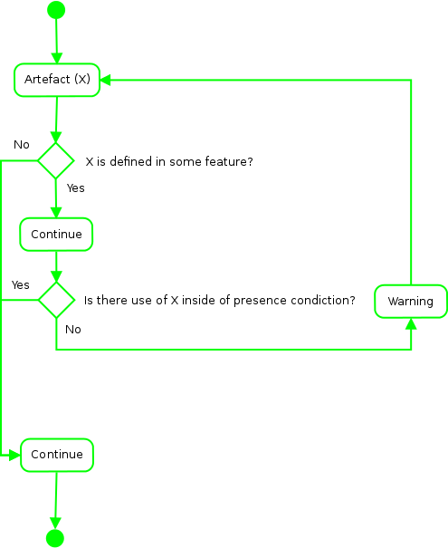

- https://www.libreoffice.org/bugzilla/show_bug.cgi?id=975
- https://www.libreoffice.org/bugzilla/show_bug.cgi?id=34548
- https://bugs.wireshark.org/bugzilla/show_bug.cgi?id=5802
- http://savannah.gnu.org/bugs/?func=detailitem&item_id=32676
- http://git.kernel.org/cgit/linux/kernel/git/stable/linux-stable.git/commit/?id=ae249b5fa27f9fba25aa59664d4338efc2dd2394
- http://git.kernel.org/cgit/linux/kernel/git/stable/linux-stable.git/commit/?id=d6c7e1139591b9ba7c4ad9c5eec748f0a68ad212
- https://www.libreoffice.org/bugzilla/show_bug.cgi?id=3053
- http://git.kernel.org/cgit/linux/kernel/git/stable/linux-stable.git/commit/?id=8c8296223f3abb142be8fc31711b18a704c0e7d8
- https://www.libreoffice.org/bugzilla/show_bug.cgi?id=2429
- http://git.kernel.org/cgit/linux/kernel/git/stable/linux-stable.git/commit/?id=f3d83e2415445e5b157bef404d38674e9e8de169
- http://git.kernel.org/cgit/linux/kernel/git/stable/linux-stable.git/commit/?id=c708c57e247775928b9a6bce7b4d8d14883bf39b
- https://gcc.gnu.org/bugzilla/show_bug.cgi?id=59575
- https://gcc.gnu.org/bugzilla/show_bug.cgi?id=24444


- https://gcc.gnu.org/bugzilla/show_bug.cgi?id=41465 (bug54)
- https://bugzilla.gnome.org/show_bug.cgi?id=142749
- https://bugzilla.gnome.org/show_bug.cgi?id=541413
- https://www.libreoffice.org/bugzilla/show_bug.cgi?id=2370
- https://bugzilla.mozilla.org/show_bug.cgi?id=807161
- https://bugzilla.mozilla.org/show_bug.cgi?id=577915
- https://bugzilla.mozilla.org/show_bug.cgi?id=774120
- https://bugzilla.gnome.org/show_bug.cgi?id=342406
- https://bugzilla.gnome.org/show_bug.cgi?id=580750
- http://lists.gnu.org/archive/html/bug-hurd/2011-09/msg00086.html
- https://gcc.gnu.org/bugzilla/show_bug.cgi?id=43936
- https://www.libreoffice.org/bugzilla/show_bug.cgi?id=3118
- https://bugzilla.gnome.org/show_bug.cgi?id=728370
- https://bugzilla.mozilla.org/show_bug.cgi?id=a
- https://gcc.gnu.org/bugzilla/show_bug.cgi?id=47571
- https://git.gnome.org/browse/libxml2/commit/?id=41586ca6674d2fae32b17156494cb6f244ac1170
- https://git.gnome.org/browse/libxml2/commit/?id=52010c639a5da3d40ef73d9aff5c43c3a642661c
- https://git.gnome.org/browse/libxml2/commit/?id=0c7109c81f3de1408ddac898bce0aa21823e3507
- https://git.gnome.org/browse/libxml2/commit/?id=3313d14f9d71e5beeb51169688b69f3a34fe4489
- https://git.gnome.org/browse/libgda/commit/?id=e4820b869a088c7cf5328ff4d7a7f5caf36e5e33
- https://git.gnome.org/browse/libgda/commit/?id=deea473d2ebbc5c61968ee088b91d3ca650df478
- https://git.gnome.org/browse/libgda/commit/?id=449780910651ee2f551ed795880bafda62ee582f
- https://git.gnome.org/browse/gtk+/commit/?id=1c099ec78489ac29a74cfcbdb953f7282652d72b
- https://git.gnome.org/browse/nautilus/commit/?id=bf8571a78f1f8c73ea449e56fa413abb3f40b91c
- http://git.kernel.org/cgit/linux/kernel/git/stable/linux-stable.git/commit/?id=f48ec1d7885281a9c6cd7779d61f321d1b1fd741

- http://git.kernel.org/cgit/linux/kernel/git/stable/linux-stable.git/commit/?id=1c17e4d4437d8045a596d9f06c1558dc09e2b372
- http://git.kernel.org/cgit/linux/kernel/git/stable/linux-stable.git/commit/?id=30e053248da178cf6154bb7e950dc8713567e3fa
- http://git.kernel.org/cgit/linux/kernel/git/stable/linux-stable.git/commit/?id=7acf6cd80b201f77371a5374a786144153629be8
- http://git.kernel.org/cgit/linux/kernel/git/stable/linux-stable.git/commit/?id=bc8cec0dff072f1a45ce7f6b2c5234bb3411ac51
- http://git.kernel.org/cgit/linux/kernel/git/stable/linux-stable.git/commit/?id=e39363a9def53dd4086be107dc8b3ebca09f045d


- https://git.gnome.org/browse/libxml2/commit/?id=1af8b7b22e3bb569b2c27642064224bc14a1924a
- https://git.gnome.org/browse/libgda/commit/?id=82fee4d9591a743894b8294aa923bbb0c9bbcace
- https://git.gnome.org/browse/gtk+/commit/?id=09ecba9a53961c362044a04e40910ea2d6f34cd3
- https://git.gnome.org/browse/gtk+/commit/?id=694c8d32d5fab4ef8d0139a910cee95200c34d8a
- http://git.kernel.org/cgit/linux/kernel/git/stable/linux-stable.git/commit/?id=36855dcfc980f247909b8f63776664c6ccb6f183